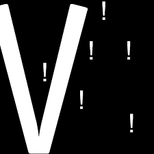

Postponed: The Future of the Visualist: Operations— Working Meeting
We are postponing this meeting.
We are continuing a conversation about what it will take to sustain The Visualist. This meeting will focus on operations and developing systems to support research and event entry.
We will break down the workflow, share research sources, and discuss where it can be expanded. We will also discuss a call for volunteers (tasks and time commitments) and how marketing—print and online—can support submissions and expand awareness of the site.
Join the discussion online: https://meet.google.com/irn-mifp-pdj
You can find updates on this project here.